A Nova Catedral Digital:
Acolhimento, Fé e Comunhão
Uma presença viva no celular de cada paroquiano, integrando a Catedral, as Comunidades (CEBs) e a rotina da Secretaria Paroquial.
Estrutura do Portal Digital
Acolhimento pastoral solene, clareza absoluta de horários, valorização de todas as comunidades (CEBs) e a presença viva da Catedral no celular de cada paroquiano.
Onde Nossos Fiéis Encontram Dificuldade
Identificamos os pontos críticos da rotina de comunicação da paróquia e a solução proposta:
- ❌ Dúvidas constantes de horários: O fiel não sabe com clareza a missa de hoje ou o plantão de confissões dos padres.
- ❌ Sobrecarga na secretaria: Centenas de ligações repetitivas com as mesmas dúvidas básicas do dia a dia.
- ❌ Comunidades sem presença digital: As comunidades filiadas não possuem espaço próprio na internet para divulgar suas festas e avisos.
- ❌ Dificuldade com folhetos das missas: Dificuldade atual dos fiéis em encontrar e baixar os folhetos das celebrações.
- ❌ Fiéis sem um canal central moderno: Falta de um portal claro para os paroquianos buscarem informações e serviços paroquiais.
- ✅ Card de Missas de Hoje: Destaque na primeira página informando horário e celebrante de forma imediata.
- ✅ Atendimento em 1 Clique: Botões direcionados para o WhatsApp da secretaria (Batismo, Casamento, Confissões).
- ✅ Páginas Individuais para cada CEB: Cada comunidade com fotos, localização GPS, história e programação da comunidade.
- ✅ Sessão de Folhetos das Missas: Sessão dedicada e organizada com calendário e download direto dos folhetos.
- ✅ Portal Completo e Acessível: Experiência moderna, solene e intuitiva para aproximar os fiéis da vida da Catedral.
Dignidade, Solenidade e Acessibilidade
Uma experiência digital acolhedora e solene, desenvolvida pensando em paroquianos de todas as gerações.
Visual Acolhedor e Solene
Ambiente caloroso e digno da Catedral do Sagrado Coração, substituindo páginas frias e impessoais por uma acolhida pastoral fraterna.
Acessibilidade para Idosos
Tipografia Clara com traços abertos, numerais grandes para os horários e seletor de aumento de fonte para leitura sem esforço.
100% Marca da Catedral
A paróquia tem destaque absoluto. O brasão da diocese, fotos da Catedral e a palavra dos nossos padres em primeiro lugar.
Missas do Dia, Confissões e Escala dos Sacerdotes
O paroquiano sabe exatamente quem celebra e quando se confessar, sem ruídos de comunicação.
Missas de Hoje na Catedral
Exibição imediata com horário grande: 07:00, 09:00 e 19h. Se houver missa solene ou transmissão ao vivo, uma notificação avisa os fiéis.
Confissões & Atendimentos
Escala clara dos sacerdotes: Pe. Irineu, Pe. Adilson, Pe. Deivid e Pe. Ernandes com horários no confessionário e secretaria.
WhatsApp da Secretaria
Atalhos diretos com mensagem pré-formatada para Intenções de Missa, Dízimo, Batismo, Casamento e Confissões.
Todas as Comunidades (CEBs) Vivas e Valorizadas
A Catedral abraça toda a extensão territorial da paróquia. Cada comunidade ganha seu mini-portal exclusivo.
Página Própria
Foto da fachada da comunidade e história dos pioneiros fundadores.
GPS Integrado
Botão "Como Chegar" com rotas diretas no Google Maps para visitantes e fiéis.
Missas & Atividades
Grade com os horários das atividades semanais da comunidade. Fiéis cadastrados receberão e-mails e notificação em seus celulares.
Festa do Padroeiro
Destaque de novenas, tríduos e quermesses locais na home e na página da comunidade.
Calendário Litúrgico: Festas, Solenidades e Leituras
A plataforma vive o ritmo da Igreja Católica, destacando as grandes celebrações mundiais e as festividades locais da Catedral e CEBs.
Grandes Festas e Solenidades
- ✨ Solenidades Universais: Páscoa, Natal, Corpus Christi, Pentecostes e festas marianas.
- ❤️ Padroeiro da Catedral: Destaque solene da grande Festa do Sagrado Coração de Jesus.
- ⛪ Festas das Comunidades: Novenas e tríduos dos santos padroeiros de cada comunidade (CEBs).
Liturgia Diária Oficial (CNBB)
Faixa rica na Home com a celebração do dia e o resumo do Evangelho, com botão para leitura das leituras bíblicas completas da CNBB.
Dízimo & Ofertas: Partilha Fraterna no PIX
Facilitando a contribuição consciente para fiéis de todas as gerações, com segurança e 100% direto na conta da paróquia.
PIX em 1 Clique
Botão inteligente de "Copiar Chave PIX". O fiel cola no banco e faz a doação em 10 segundos, sem formulários chatos.
Segurança Absoluta
O dinheiro entra instantaneamente na conta bancária oficial da Catedral. Sem intermediários e sem retenções.
Conscientização Pastoral
Espaço "Sou do Sagrado, Sou Dizimista" com mensagens formativas sobre a dimensão religiosa, social e missionária do dízimo.
Painel da Secretaria: Zero Complicação
A secretária ou voluntário altera avisos, missas e fotos em minutos, sem precisar chamar técnico ou programador.
Avisos em 30 Segundos
Publicou a novena ou a quermesse no painel, já aparece instantaneamente na Home da Catedral.
Grade Semanal Dinâmica
Mudança rápida de horário de missa de feriado ou celebração especial com 2 cliques no calendário.
Proteção e Simplicidade
Interface 100% em português, limpa e segura. A secretária tem autonomia total às funcionalidades do site.
O Atalho da Catedral na Tela do Celular
Instalação instantânea direto do navegador, sem passar por lojas de aplicativos e sem ocupar a memória do aparelho.
Sem Lojas de Aplicativos
O paroquiano não precisa entrar na Google Play ou Apple Store, nem criar contas ou senhas complicadas.
Instalação com 1 Toque
Ao abrir o site da Catedral, surge um botão inteligente para adicionar o ícone da paróquia direto na tela inicial do celular.
Leve, Rápido e Universal
Não consome memória do aparelho, abre em tela cheia e funciona em qualquer celular Android ou iPhone.

Apresentação do Ecclesiam App
A plataforma tecnológica eclesial por trás do portal. Conheça a maturidade do sistema com estrutura já implementada e o cronograma seguro para lançamento oficial no Advento.
Por Trás do Portal: O Ecclesiam App
O site da Catedral não começa do zero. Uma plataforma tecnológica robusta, já desenvolvida e dedicada exclusivamente ao ecossistema paroquial católico.
Estrutura Já Implementada
Recursos digitais já estruturados para receber o site da Catedral: base sólida pronta para horários, avisos, confissões e integração com a secretaria.
Dados Reais da Catedral
Clero cadastrado (Pe. Irineu, Pe. Adilson, Pe. Deivid, Pe. Ernandes), 11 comunidades (CEBs) mapeadas e 10 pastorais ativas já alimentadas.
Paróquia Piloto & Modelo
A Catedral do Sagrado Coração entra como pioneira, farol e modelo de excelência eclesial para toda a Diocese de Colatina.
Meta de Lançamento: 2ª Quinzena de Novembro
Planejamento sereno e estratégico, alinhado ao calendário da Igreja Católica para colher os frutos do Advento e Missas de Fim de Ano.
Validação das fotos oficiais do clero, aprovação dos textos e bênção pastoral do Pe. Irineu com calma e sem correria.
Integração dos mini-sites das 11 comunidades com GPS e treinamento prático de 1 hora com a secretária paroquial.
Inauguração oficial no 1º Domingo do Advento, deixando a Catedral 100% pronta para atender aos fiéis no Natal e Fim de Ano.
Custos e Manutenção
Transparência orçamentária, planos de assinatura do mercado e modelo de sustentabilidade pastoral com condição especial para a Catedral.
Investimento Transparente: O Sistema que se Paga
Valores de implantação e manutenção calculados para a Catedral, viabilizados pelo retorno contínuo do Dízimo e Ofertas.
Taxa Única: R$ 1.200
Carga completa das 11 comunidades (CEBs), mapas GPS, escalas e treinamento presencial VIP da equipe da secretaria.
R$ 490 / mês
Plano com suporte a até 20 CEBs (atende com folga as 11 comunidades atuais). Servidores em nuvem, backup diário e atualizações litúrgicas.
Superávit no PIX
Com o Dízimo PIX em 1 clique, apenas 4 a 5 novos dizimistas por mês ou as ofertas de fiéis sem dinheiro físico na missa já pagam 100% do sistema.
Planos de Assinatura: Ecclesiam App
Modelagem profissional com inspiração bíblica para cada realidade eclesial, com condição piloto para a Catedral.
Plano Semente
- ✓ Matriz + até 3 comunidades
- ✓ Missas, Confissões e Avisos
- ✓ Dízimo & Ofertas via PIX
- ✓ Liturgia Diária e Santo
- ✓ 1 Acesso para secretaria
Plano Semeador
- ✓ Tudo do Plano Semente
- ✓ Até 8 CEBs com GPS
- ✓ Pastorais e Movimentos
- ✓ Notificações diretas aos fiéis
- ✓ Até 5 Acessos com permissões
- ✓ Suporte prioritário WhatsApp
Plano Pescador
- ✓ Tudo do Plano Semeador
- ✓ Até 20 Comunidades (CEBs)
- ✓ Cobre as 11 CEBs da Catedral
- ✓ Múltiplos padres & escalas
- ✓ QR Codes para bancos da igreja
- ✓ Transmissão ao vivo integrada
- ✓ Onboarding VIP presencial
Plano Videira
- ✓ Todos os recursos anteriores
- ✓ CEBs Ilimitadas
- ✓ Acessos ilimitados
- ✓ Alta volumetria de fiéis
- ✓ Romarias & Peregrinações
- ✓ Suporte VIP prioritário 24/7

Parceria, dedicação e excelência a serviço da evangelização digital da Catedral do Sagrado Coração de Jesus e da Diocese de Colatina.